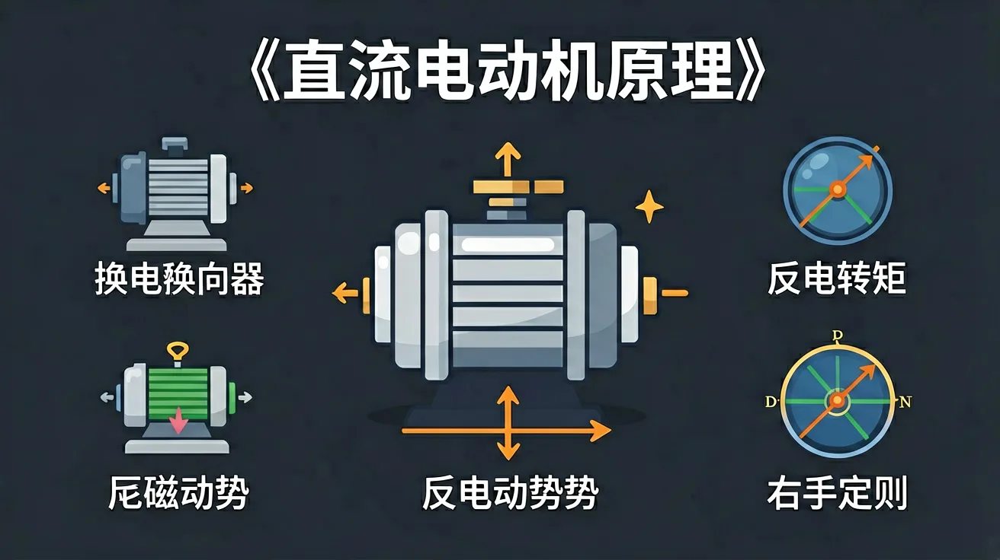

正在打开课件：直流电动机原理
开始新课之前先花一分钟自评起点，前测不计分，它告诉 AI 学伴从哪里帮你最有效。
1. 你能用自己的话解释「ext-16a14ef」讲的是什么吗？
2. 你能在生活中举出一个与「ext-16a14ef」相关的例子吗？
你已经学过相关的前置知识，具备继续探索的底座；在日常生活中，你也早就接触过与「ext-16a14ef」相关的现象。
但当问题换了一个情境出现——需要你解释原因、做出判断或解决实际任务时，仅凭零散的旧知识就很容易卡住。
所以本课用一个贯穿的情境任务，带你把「ext-16a14ef」拆成可操作的步骤：先看懂它，再动手试，最后用练习和迁移把它变成自己的能力。

直流电动机主要由定子、转子、换向器和电刷组成。定子是固定部分，通常由永磁体或电磁铁构成，产生恒定的磁场。转子是旋转部分，由铁芯和绕组组成，通电后在磁场中受力旋转。换向器是安装在转子轴上的铜片，与电刷接触，用于改变电流方向。电刷则固定在定子上，与换向器滑动接触，将外部电源的电能引入转子绕组。例如，玩具小汽车中的电动机就是典型的直流电动机，其结构简单，便于理解。
直流电动机的工作原理基于磁场与电流的相互作用。当电流通过转子绕组时，绕组在磁场中受到安培力的作用，从而产生转矩使转子旋转。根据左手定则，可以判断力的方向：伸开左手，让磁感线垂直穿过掌心，四指指向电流方向，拇指所指方向即为受力方向。例如，实验中用导线连接电池和磁铁，导线会因受力而运动，这就是电动机的基本原理。
换向器是直流电动机的关键部件，其作用是在转子旋转过程中周期性改变电流方向，从而保证转子持续旋转。当转子转过一定角度后，换向器会切换电流方向，使转子绕组中的电流方向与磁场方向始终保持合适的夹角，从而产生持续的转矩。例如，电风扇中的电动机通过换向器实现持续转动，若换向器损坏，电动机将无法正常工作。
直流电动机根据励磁方式可分为永磁式、他励式、并励式、串励式和复励式。永磁式电动机的定子采用永磁体，结构简单但功率较小，常用于小型设备。他励式电动机的定子和转子分别由独立电源供电，控制灵活。并励式电动机的定子绕组与转子绕组并联，转速稳定。串励式电动机的定子绕组与转子绕组串联，启动转矩大。复励式电动机结合了并励和串励的特点，适用于多种场合。例如，电动工具常用串励式电动机以获得较大的启动转矩。
直流电动机的特性曲线包括转速-转矩曲线和效率曲线。转速-转矩曲线反映了电动机在不同负载下的转速变化，通常负载增加时转速略有下降。效率曲线则显示了电动机在不同负载下的能量转换效率，通常在额定负载附近效率最高。例如，电动自行车的电动机在爬坡时转速会下降，但转矩增大，以适应负载变化。理解这些曲线有助于选择合适的电动机。
直流电动机的控制方法主要包括电压控制、电流控制和PWM（脉宽调制）控制。电压控制通过调节电源电压来改变电动机的转速，简单但效率较低。电流控制通过限制电流来保护电动机，常用于启动阶段。PWM控制通过快速开关电源来调节平均电压，效率高且控制精确。例如，遥控车的速度调节就是通过PWM控制实现的。
直流电动机广泛应用于日常生活和工业生产中。在家庭中，电风扇、洗衣机、吸尘器等家电都使用直流电动机。在交通领域，电动自行车、电动汽车的驱动电机也是直流电动机。工业上，机床、 conveyor belt 等设备也依赖直流电动机提供动力。例如，地铁车辆的牵引系统采用大功率直流电动机，具有启动转矩大、调速范围广的优点。
直流电动机的维护包括定期检查电刷磨损、换向器清洁和轴承润滑。电刷磨损过度会导致接触不良，换向器脏污会引起火花，轴承缺油会增加摩擦阻力。常见故障包括无法启动、转速不稳和噪音过大。例如，若电动机启动时发出异常噪音，可能是轴承损坏，需及时更换。定期维护可以延长电动机的使用寿命。
直流电动机主要由定子、转子、电刷和换向器组成。定子通常由永磁体或电磁铁构成，产生固定的磁场。转子由线圈绕制而成，当电流通过线圈时，线圈在磁场中受力而旋转。电刷和换向器的作用是确保电流在旋转过程中始终从同一方向进入线圈，从而维持持续的旋转运动。例如，家用的电风扇就是利用直流电动机的原理，通过电刷和换向器的配合，使得风扇叶片能够持续旋转，带来凉风。
直流电动机因其结构简单、控制方便、启动扭矩大等优点，广泛应用于各种设备和系统中。例如，电动玩具中的马达、电动汽车的驱动电机、以及工业生产中的传送带驱动等。直流电动机可以通过调节电压来控制转速，这使得它在需要精确速度控制的场合中非常有用。此外，直流电动机的启动性能优越，能够在较低电压下提供较大的启动扭矩，这对于需要快速启动的设备尤为重要。例如，电动自行车在起步时需要较大的扭矩来克服惯性，直流电动机能够很好地满足这一需求。
电刷和换向器是直流电动机中实现电流方向自动切换的关键部件。电刷通常由石墨制成，固定在电动机外壳上，与旋转的换向器保持滑动接触。换向器由多个铜片组成，安装在转子轴上，随转子一起旋转。当转子转动时，换向器片交替与电刷接触，从而改变转子线圈中的电流方向，确保转子持续受到同一方向的转矩作用。例如，在玩具四驱车的马达中，电刷与换向器的配合使小车能够持续前进。若电刷磨损或换向器氧化，会导致接触不良，表现为马达运转无力或间歇性停转。
直流电动机在实际运行中并非100%高效，主要能量损耗包括：1）铜损——电流流经线圈电阻时发热（P=I²R）；2）铁损——交变磁场在铁芯中产生涡流和磁滞损耗；3）机械损耗——轴承摩擦和空气阻力。例如，一台标称12V/100W的电机，实测输入功率可能需110W，效率约90%。提高效率的方法包括：采用低电阻率漆包线减少铜损、使用硅钢片叠压铁芯降低涡流、定期润滑轴承。在电动自行车中，高效电机能延长续航里程，而老旧电机因损耗增加会导致电池耗电加快。
1. 你知道直流电动机由哪些主要部件组成吗？2. 你能解释换向器的作用吗？3. 你见过哪些设备使用直流电动机？
1. 直流电动机的工作原理是什么？2. 换向器在电动机工作过程中起什么作用？3. 列举三种直流电动机的应用实例。
常见误区：学生可能误认为直流电动机的转速完全由电压决定，忽略了负载的影响。错因：对电动机特性曲线理解不足。诊断：通过实验展示不同负载下的转速变化，帮助学生建立正确的认识。
迁移挑战：设计一个实验，探究不同电压下直流电动机的转速变化，并分析实验结果。
先独立作答，再点选项查看对错与错因。
直流电动机工作时，将电能主要转化为哪种能量形式？
下列哪个部件用于改变直流电动机转子线圈中的电流方向？
增大直流电动机转速最直接的方法是？
直流电动机的____定律表明电磁转矩与电枢电流和磁通量乘积成正比
答案：电磁转矩
T=KtIaΦ，其中Kt为转矩常数
电动机空载时转速趋于无限大的现象称为____
答案：飞车
此时反电动势无法平衡电源电压
关于电刷火花现象的正确理解是？
设计实验探究供电电压与电动机转速的定量关系
👀 看见它：在生活的真实场景里，「ext-16a14ef」长什么样？先找到一两个能摸得着的例子。
🧩 拆开它：它由哪几个关键部分组成？每个部分起什么作用、背后的原理是什么？
🚀 迁移它：换一个情境，这个结论还成立吗？试着解释一个课本之外的新例子。
类比记忆：把「ext-16a14ef」想象成你熟悉的一件东西或一个场景——就像给新知识找一个老朋友。写下你的类比，交给 AI 学伴帮你检查贴不贴切。
口诀挑战：试着把本课最容易忘的三个要点缩成一句不超过 15 字的口诀，顺口、好记、不漏关键条件。
把你对「ext-16a14ef」的理解画下来：标注关键词、画出结构关系，再对照讲解检查。
对照前测，用三级任务检验自己的成长。能完成 Level 2 以上，说明你真的学会了。
Level 1 基础巩固 ⭐（识别与理解）：用自己的话解释「ext-16a14ef」的核心结论，并说出它成立的条件。
Level 2 能力应用 ⭐⭐（应用与分析）：比较「ext-16a14ef」与一个相近概念，说明它们的区别；或把它代入一个新例子做出判断。
Level 3 迁移挑战 ⭐⭐⭐（评价与创造）：设计一道以真实生活为情境的「ext-16a14ef」小考题，考考同桌或 AI 学伴。